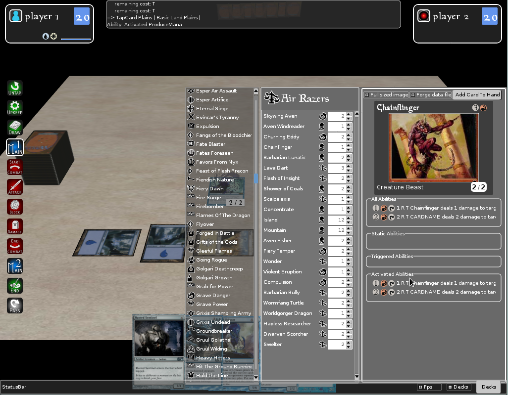
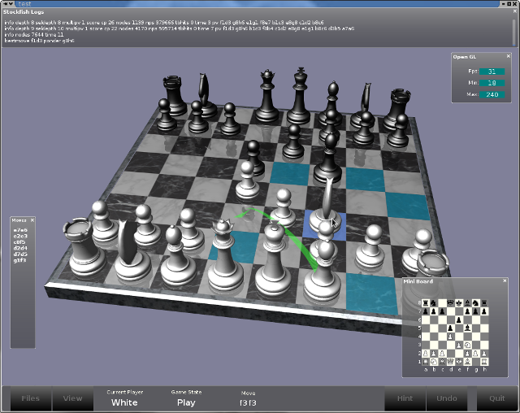

CROW is a pure C# widget toolkit originally developed for rapid GUI implementation for OpenTK.
Trying to make it as efficient as possible, it evolved as a full feature toolkit with templates, styles, compositing, and bindings. Running under Mono, With multi-platform libraries it should run on any target.
Crow has full transparency support, but a fast opaque rendering queue exist for heavy critical application.
Screen shots
|  |  |
 |
Feature
- XML interface definition.
- Templates and styling.
- Dynamic binding system with code injection.
- Inlined delegates in XML.
- Proportionnal layouting.
Building
git clone https://github.com/jpbruyere/Crow.git # Download source code from github
cd Crow # Enter the source directory
nuget restore Crow.sln # Restore nuget packages
msbuild /p:Configuration=Release Crow.sln # Build on .Net (Windows)
xbuild /p:Configuration=Release Crow.sln # Build on Mono (Linux / Mac OS X)